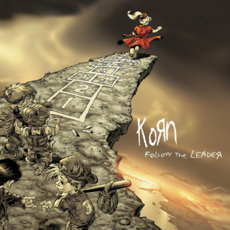

5 melhores albuns (opnião pessoal)
- Korn(1994)

O álbum de estreia da banda, marcando o início do nu metal. Com faixas como "Blind" e "Faget", o disco apresenta um som agressivo, com riffs pesados e letras intensas que exploram temas de angústia pessoal e rejeição. - issues(1999)

Um dos álbuns mais aclamados da banda, trazendo uma mistura de nu metal com elementos mais melódicos. Faixas como "Falling Away from Me" e "Somebody Someone" abordam temas de dor emocional e lutas internas, com uma sonoridade mais sombria e introspectiva. - See you on the other side(2005)
Este álbum marca uma transição sonora, incorporando mais elementos eletrônicos e experimentações sonoras. Faixas como "Twisted Transistor" e "Coming Undone" refletem a busca da banda por novos caminhos, mantendo a intensidade emocional. - Follow the leader(1998)

Um dos maiores sucessos comerciais da banda, trazendo hits como "Freak on a Leash" e "Got the Life". O álbum apresenta uma sonoridade pesada e cativante, com uma mistura de rap, metal e influências eletrônicas, consolidando Korn como ícones do nu metal. - Untitled(2007)

Um álbum mais experimental, com a banda explorando novos estilos e deixando de lado a sonoridade típica do nu metal. Faixas como "Evolution" e "Hold On" mostram uma abordagem mais atmosférica e introspectiva, com menos ênfase no rap e mais no lado melódico do som.